The exploration of demographic factors such as gender and age provides critical insights into their potential impact on the outcomes of heart failure patients admitted to the Intensive Care Unit (ICU). This report section presents an analysis of in-hospital mortality rates categorized by gender and age groups.
mortality_data_EDA %>%
group_by(gender) %>%
summarise(
Count = n(), # total number of entries for each gender
Alive = sum(outcome == "Alive"), # number of outcomes with value 0
Death = sum(outcome == "Death"), # number of outcomes with value 1
Percentage = Death/Count
) %>%
knitr::kable(digits = 3) | gender | Count | Alive | Death | Percentage |
|---|---|---|---|---|
| Female | 618 | 539 | 79 | 0.128 |
| Male | 558 | 478 | 80 | 0.143 |
The dataset comprised 618 females and 558 males. The mortality rate among female patients was 12.8%, while the mortality rate for male patients was slightly higher at 14.3%.
# Define age intervals
age_breaks <- c(-Inf, 20, 40, 60, 80, Inf)
age_labels <- c('Under 20', '20-40', '40-60', '60-80', 'Over 80')
# Create age groups and summarize outcomes
mortality_data_EDA %>%
mutate(Age_group = cut(age, breaks = age_breaks, labels = age_labels, right = FALSE)) %>%
group_by(Age_group) %>%
summarise(Count = n(),
Alive = sum(outcome == "Alive", na.rm = TRUE),
Death = sum(outcome == "Death", na.rm = TRUE),
Percentage = Death/(Alive + Death)) %>%
knitr::kable(digits = 3) | Age_group | Count | Alive | Death | Percentage |
|---|---|---|---|---|
| Under 20 | 2 | 2 | 0 | 0.000 |
| 20-40 | 16 | 15 | 1 | 0.062 |
| 40-60 | 158 | 138 | 20 | 0.127 |
| 60-80 | 492 | 435 | 57 | 0.116 |
| Over 80 | 508 | 427 | 81 | 0.159 |
It was observed that patients under 20 years had a 0% mortality rate. Patients aged 20-40 years had a mortality rate of 6.2%, which increased with age. The 40-60 and 60-80 age groups had mortality rates of 12.7% and 11.6%, respectively. Notably, the group over 80 years had the highest mortality rate at 15.9%, underscoring the increased vulnerability among the elderly population.
# Distribution of Age
ggplot(mortality_data_EDA, aes(x = age)) +
geom_histogram(binwidth = 3, fill = "steelblue", color = "black") +
ggtitle("Age Distribution")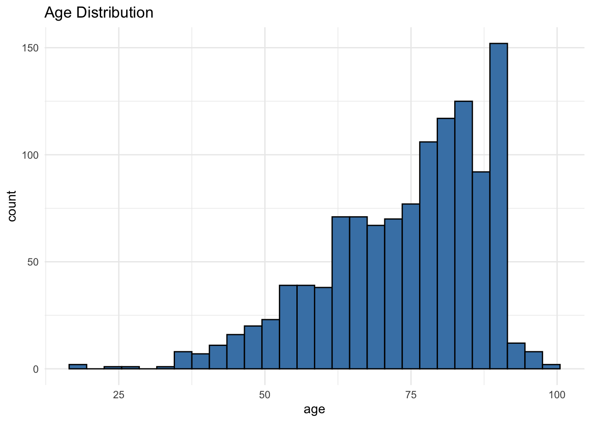
The histogram shows the age distribution of patients with heart failure admitted to the ICU, and it is highly left-skewed. It shows that the bulk of patients falls within the middle-aged to elderly category, with a significant concentration between ages 70 and 90. This suggests that heart failure is more prevalent or more severe, warranting ICU admission, in this age demographic.
# Bivariate Analysis
ggplot(mortality_data_EDA, aes(x = gender, y = age, fill = outcome)) +
geom_boxplot() +
ggtitle("Age Distribution by Gender and Outcome")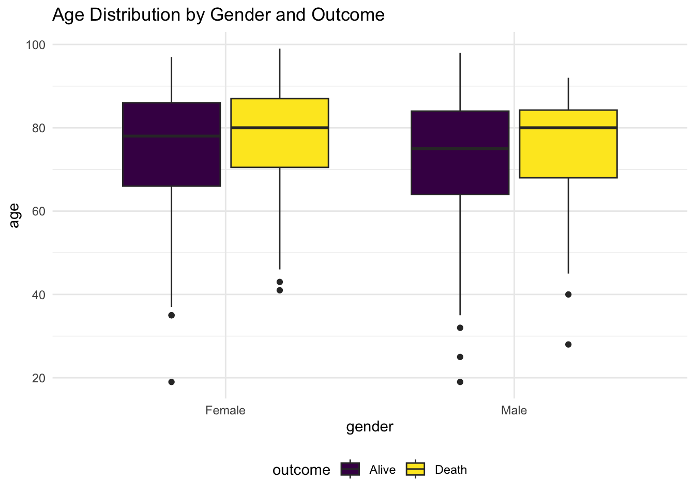
The boxplots show the age distribution for different genders and outcomes. We see that for both genders, the age distribution for patients who did not survive (outcome 1) is slightly higher. This could indicate that older age is a risk factor for mortality in this patient group.
# Blood Pressure by Outcome
ggplot(mortality_data_EDA, aes(x = systolic_blood_pressure, y = diastolic_blood_pressure, color = as.factor(outcome))) +
geom_point(alpha = 0.5) +
ggtitle("Blood Pressure by Outcome")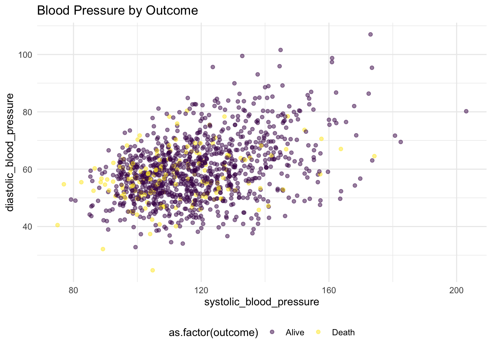
# BMI by Gender and Outcome
ggplot(mortality_data_EDA %>% drop_na(bmi), aes(x = bmi, fill = as.factor(outcome))) +
geom_histogram(binwidth = 1, position = "dodge") +
facet_wrap(~gender) +
ggtitle("BMI by Gender and Outcome")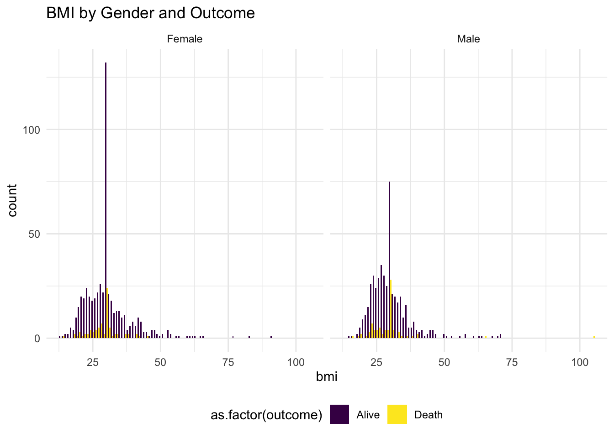
# Heart Rate by Outcome
ggplot(mortality_data_EDA, aes(x = heart_rate, fill = as.factor(outcome))) +
geom_density(alpha = 0.7) +
ggtitle("Heart Rate Distribution by Outcome")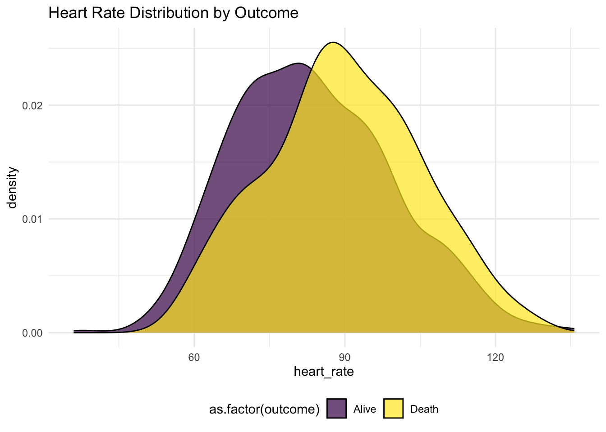
Blood Pressure by Outcome:
This scatterplot shows systolic vs. diastolic blood pressure colored by outcome. The points are widely spread, indicating variability in blood pressure readings across the patient population. There doesn’t seem to be a clear separation between the two outcomes based on blood pressure alone.
BMI by Gender and Outcome:
It shows a wide range of BMI values for both genders, with no clear pattern indicating that BMI is distinctly associated with the outcome. However, there are more data points for BMI for outcome 0, which may suggest a higher survival rate for patients with a lower BMI, although further statistical analysis is needed.
Heart Rate Distribution by Outcome:
The density plot for heart rate shows that the distribution of heart rates for patients who did not survive is slightly shifted towards the higher end compared to those who survived. This could suggest that a higher heart rate is associated with a higher risk of mortality.
# Analyzing the presence of comorbidities by outcome
comorbidities <- c("hypertensive", "diabetes", "deficiencyanemias", "depression", "renal_failure", "copd", "hyperlipemia")
# Melt the data for easier plotting
mortality_long <- melt(mortality_data_EDA, id.vars = "outcome", measure.vars = comorbidities)## Warning in melt(mortality_data_EDA, id.vars = "outcome", measure.vars =
## comorbidities): The melt generic in data.table has been passed a tbl_df and
## will attempt to redirect to the relevant reshape2 method; please note that
## reshape2 is deprecated, and this redirection is now deprecated as well. To
## continue using melt methods from reshape2 while both libraries are attached,
## e.g. melt.list, you can prepend the namespace like
## reshape2::melt(mortality_data_EDA). In the next version, this warning will
## become an error.# Plotting comorbidities by outcome
ggplot(mortality_long, aes(x = variable, fill = as.factor(value))) +
geom_bar(position = "fill") +
facet_wrap(~outcome) +
labs(x = "Comorbidity", y = "Count", fill = "Presence") +
ggtitle("Distribution of Comorbidities by Outcome") +
scale_y_continuous(labels = scales::percent)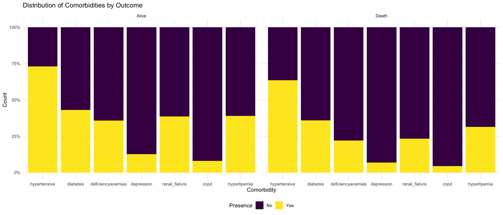
Distribution of Comorbidities by Outcome:
The stacked bar plot shows the distribution of comorbidities by outcome. It appears that the proportion of patients with certain comorbidities like renal failure and COPD is higher among non-survivors.
# Creatinine levels by outcome
ggplot(mortality_data_EDA %>% drop_na(creatinine), aes(x = creatinine, fill = as.factor(outcome))) +
geom_density(alpha = 0.5) +
ggtitle("Creatinine Levels by Outcome")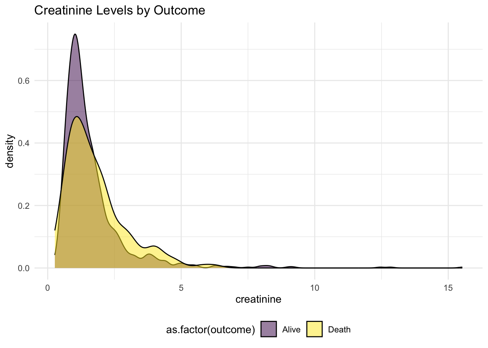
# Lactic acid levels by outcome
ggplot(mortality_data_EDA %>% drop_na(lactic_acid), aes(x = lactic_acid, fill = as.factor(outcome))) +
geom_density(alpha = 0.5) +
ggtitle("Lactic Acid Levels by Outcome")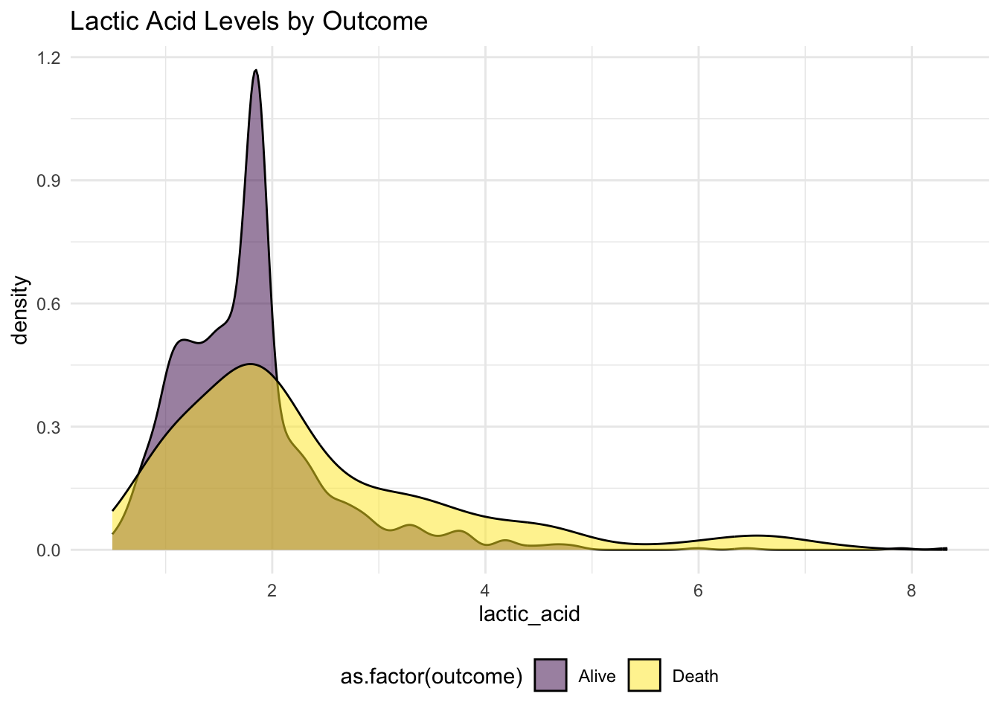
# Urea nitrogen levels by outcome
ggplot(mortality_data_EDA %>% drop_na(urea_nitrogen), aes(x = urea_nitrogen, fill = as.factor(outcome))) +
geom_density(alpha = 0.5) +
ggtitle("Blood Urea nitrogen Levels by Outcome")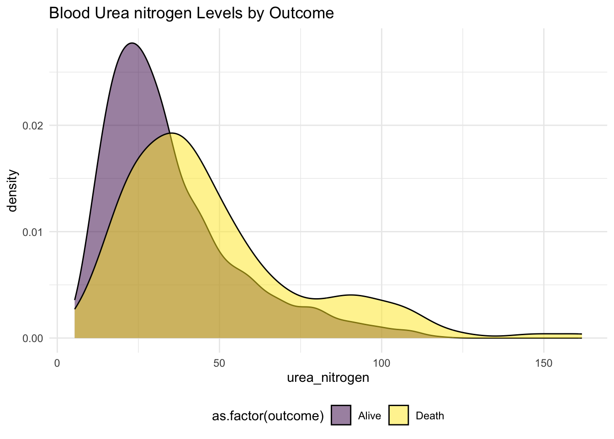
# Leucocyte count by outcome
ggplot(mortality_data_EDA %>% drop_na(leucocyte), aes(x = leucocyte, fill = as.factor(outcome))) +
geom_density(alpha = 0.5) +
ggtitle("Leucocyte Count by Outcome")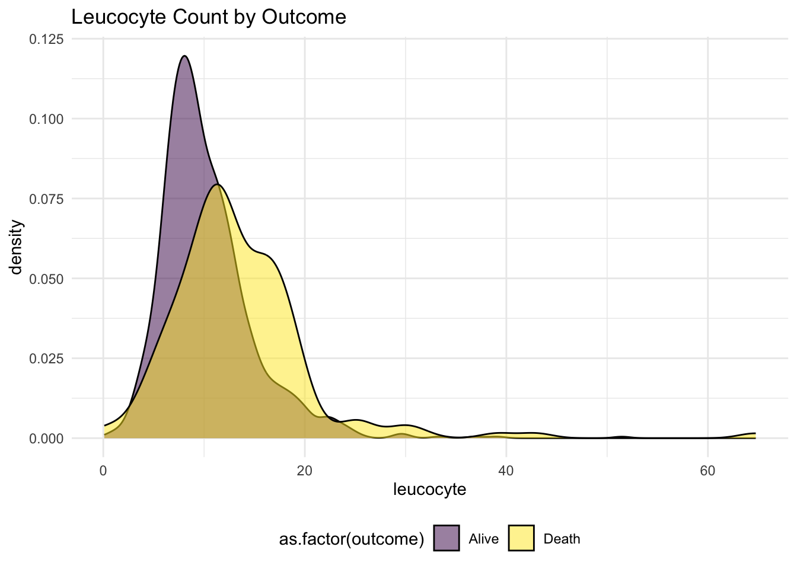
# Glucose levels by outcome
ggplot(mortality_data_EDA %>% drop_na(glucose), aes(x = glucose, fill = as.factor(outcome))) +
geom_density(alpha = 0.5) +
ggtitle("Glucose Levels by Outcome")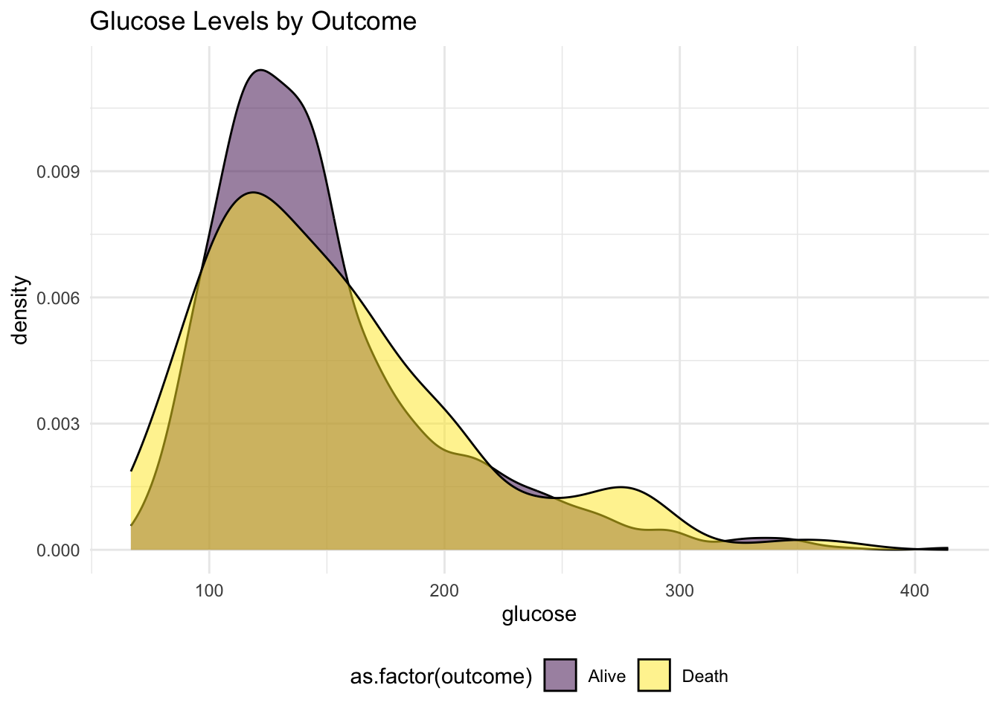
ggplot(mortality_data_EDA %>% drop_na(anion_gap), aes(x = anion_gap, fill = as.factor(outcome))) +
geom_density(alpha = 0.5) +
ggtitle("Anion Gap Levels by Outcome")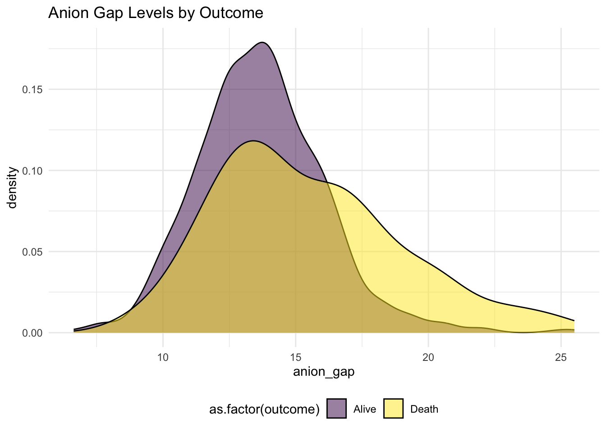
ggplot(mortality_data_EDA %>% drop_na(pco2), aes(x = pco2, fill = as.factor(outcome))) +
geom_density(alpha = 0.5) +
ggtitle("Pco2 Levels by Outcome")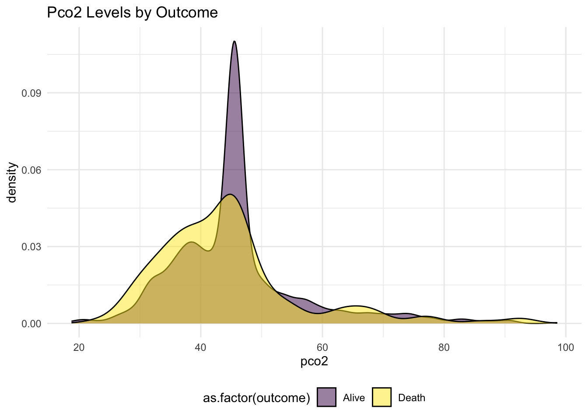
Blood Urea Nitrogen Levels by Outcome:
Patients with higher levels seem to have a poorer outcome, as indicated by the longer tail in the distribution for non-survivors. High blood urea nitrogen levels can be indicative of renal insufficiency or failure, which is a known risk factor for mortality.
Leucocyte Count by Outcome:
The density plot shows a higher peak for leucocyte count among survivors (outcome 0) compared to non-survivors (outcome 1). However, there is a long tail in the distribution for non-survivors, suggesting that some patients who did not survive had very high leucocyte counts, which could indicate severe infection or systemic stress.
# Logistic regression to assess the impact of various factors on outcome
# Select relevant variables for the logistic regression model
logistic_model <- glm(outcome ~ age + gender + bmi + hypertensive + diabetes + renal_failure + leucocyte +
urea_nitrogen + heart_rate,
data = mortality_data, family = binomial())
# Summary of the model to check for significant variables
summary(logistic_model)##
## Call:
## glm(formula = outcome ~ age + gender + bmi + hypertensive + diabetes +
## renal_failure + leucocyte + urea_nitrogen + heart_rate, family = binomial(),
## data = mortality_data)
##
## Coefficients:
## Estimate Std. Error z value Pr(>|z|)
## (Intercept) -6.721637 1.088666 -6.174 6.65e-10 ***
## age 0.021188 0.008117 2.610 0.00905 **
## gender2 -0.066186 0.188303 -0.351 0.72522
## bmi -0.008810 0.013518 -0.652 0.51456
## hypertensive1 -0.454324 0.201458 -2.255 0.02412 *
## diabetes1 -0.174547 0.203969 -0.856 0.39214
## renal_failure1 -1.293431 0.250874 -5.156 2.53e-07 ***
## leucocyte 0.066083 0.016067 4.113 3.91e-05 ***
## urea_nitrogen 0.036593 0.004541 8.058 7.73e-16 ***
## heart_rate 0.024365 0.006134 3.972 7.13e-05 ***
## ---
## Signif. codes: 0 '***' 0.001 '**' 0.01 '*' 0.05 '.' 0.1 ' ' 1
##
## (Dispersion parameter for binomial family taken to be 1)
##
## Null deviance: 931.77 on 1175 degrees of freedom
## Residual deviance: 782.08 on 1166 degrees of freedom
## AIC: 802.08
##
## Number of Fisher Scoring iterations: 5